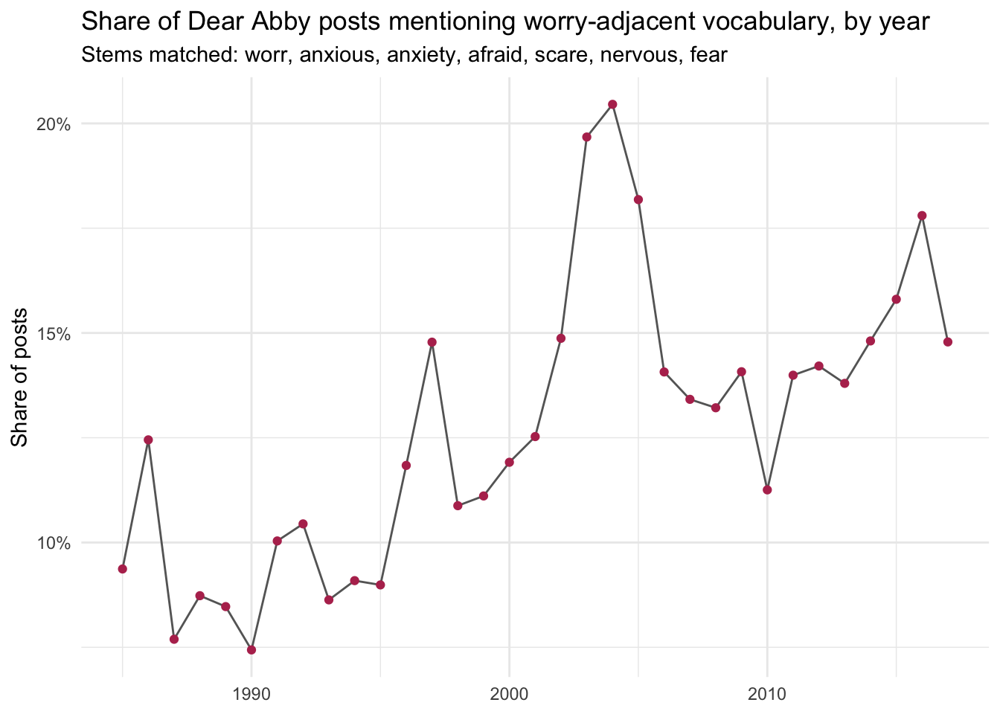

7 — Advanced Data Wrangling II: Strings and Regular Expressions
Setup
🔥 Data Story Critique — World’s Longest Mule Deer Migration
Source: https://geonarrative.usgs.gov/muledeer255/
What is the data story?
The USGS geonarrative follows Deer 255, a mule deer doe GPS-collared in Wyoming’s Red Desert in March 2016 as part of a research project led by Matthew Kauffman (USGS Wyoming Cooperative Fish and Wildlife Research Unit) and the Monteith Shop at the University of Wyoming. In her first tracked year she migrated 242 miles one way from her wintering ground near Superior, WY to summer range in Island Park, Idaho — a 480-mile annual round trip that is the longest point-to-point land migration ever documented in the lower 48 states, and second on the continent only to North American caribou. Her GPS track becomes the narrative spine of the piece.
The story uses her yearly trajectory as a scrolling cartographic sequence, layering in information about (1) the jurisdictional patchwork her route traverses — national parks, national forests, BLM land, working ranches, state highways — (2) the physical obstacles she negotiates (more than a thousand fence jumps and dozens of highway crossings across her lifetime), and (3) the herd-level context that three distinct migration strategies (short, medium, long-distance) coexist within the same Sublette mule deer herd. The piece was explicitly built to be embedded in the American Conservation and Stewardship Atlas under the America the Beautiful initiative — so it is not just science communication but a policy artifact arguing for corridor-scale conservation across fragmented authority.
What is effective?
- Named-individual protagonist. Deer 255 as a character (rather than “a representative deer”) gives the reader an anchor to return to. It is a technique borrowed from long-form journalism that makes a multi-year GPS time-series legible as a narrative rather than as a dataset.
- Scroll-synchronized cartography. The map state advances in lockstep with the explanatory text, collapsing spatial reading and textual reading into a single motion. This is appropriate for a story where geography is the data.
- Narrative tension through scientific honesty. The “was it a fluke?” arc — collar failure in Idaho, a nineteen-month disappearance, recapture, then confirmation of annual repetition — earns the reader’s investment before the policy argument arrives. It also models how field science actually produces knowledge (with gaps, surprises, and re-captures) rather than presenting a polished result.
- Visual encoding of land tenure. Colouring the route by managing agency makes the fragmentation argument legible at a glance, which is crucial because the reader cannot be expected to pre-load the map of federal land categories in the American West.
What could be improved?
- Accessibility. Scroll-driven visualizations are known to be difficult for screen-reader users, keyboard-only navigation, and low-bandwidth contexts. There does not appear to be a text-first alternate path through the same content. A parallel narrative version with static maps and figure captions would significantly widen the audience.
- Presumed geographic literacy. The story assumes the reader can situate the Red Desert, Hoback Basin, and the Greater Yellowstone Ecosystem relative to one another. A persistent inset locator map (placing the route within North America at continental scale) would help international and non-Western-US readers register the magnitude of the journey.
- Individual framing obscures distribution. The single-protagonist device, while narratively effective, risks collapsing migration into a story about one exceptional deer rather than about a distribution of strategies within a herd. The short- and medium-distance migrants are mentioned but not developed; foregrounding a short-distance peer alongside Deer 255 would make the biological argument sharper.
- Uncertainty not visualized. GPS collar fixes carry known error envelopes and temporal gaps (the collar-failure period is an obvious one). These are collapsed rather than represented. For a piece being absorbed into a federal conservation atlas, representing data absence honestly matters.
- The policy ask stops at the problem. The piece identifies barriers (fences, highways, development) but does not close the loop by showing which interventions — wildlife crossings, conservation easements, fence modifications — have actually reconnected corridors. The atlas-embedding mandate would be strengthened by concrete examples of what worked and what did not.
Creating Strings
Exercise — It's Thursday
Code
[1] "It's Thursday"Code
[1] "It's Thursday"Takeaway: if the string contains an apostrophe, use double quotes; if it contains a double quote, use single quotes; if it contains both, pick one delimiter and escape the other with \.
Exercise — C:\Users
Without escaping the backslash, R cannot even parse the line — it fails before execution:
The \ is the escape character, so a literal backslash must itself be written as \\. The specific failure here is that \U is reserved for Unicode codepoints (\U0928, etc.) and expects hex digits to follow.
Exercise — Full date string with str_c() and str_glue()
Code
# A tibble: 3 × 5
year month day date_str_c date_str_glue
<dbl> <chr> <dbl> <chr> <glue>
1 2000 Jan 3 Jan-3-2000 Jan-3-2000
2 2001 Feb 4 Feb-4-2001 Feb-4-2001
3 2002 Mar 5 Mar-5-2002 Mar-5-2002 Both produce identical visible output. str_c() requires every literal separator to be passed as its own argument; str_glue() lets the template read almost like the desired output — a readability win as patterns get longer.
Extracting Information from Strings
Exercise — Middle letter of each word
Code
# A tibble: 3 × 5
word_id word word_length middle_pos middle_letter
<int> <chr> <int> <dbl> <chr>
1 1 replace 7 4 l
2 2 match 5 3 t
3 3 pattern 7 4 t Challenge — handling even-length words
For odd-length words there is a single middle letter. For even-length words there is no single middle, so the honest answer is to return the two central letters. The following handles both cases uniformly:
- for length \(n\), start position is \(\lfloor (n+1)/2 \rfloor\)
- end position is \(\lceil (n+1)/2 \rceil\)
which gives a single letter when \(n\) is odd and two letters when \(n\) is even.
Code
# A tibble: 5 × 6
word_id word word_length start_pos end_pos middle
<int> <chr> <int> <dbl> <dbl> <chr>
1 1 replace 7 4 4 l
2 2 match 5 3 3 t
3 3 banana 6 3 4 na
4 4 data 4 2 3 at
5 5 a 1 1 1 a Check: replace (7) → l, match (5) → t, banana (6) → na, data (4) → at, a (1) → a.
Finding Patterns with Regular Expressions
Exercise — Predicting quantifier matches
My predictions before running:
-
"ab?"—bis optional, so the regex matchesaoptionally followed by oneb. Expected:"a"matchesa;"ab"matchesab;"abb"matches only the firstab(greedy but?caps at one). -
"ab+"— requiresafollowed by at least oneb. Expected:"a"no match;"ab"matchesab;"abb"matchesabb. -
"ab*"— requiresafollowed by zero or morebs. Expected:"a"matchesa;"ab"matchesab;"abb"matchesabb.
[1] │ <a>
[2] │ <ab>
[3] │ <ab>b[2] │ <ab>
[3] │ <abb>[1] │ <a>
[2] │ <ab>
[3] │ <abb>Predictions confirmed.
Exercise — Words with two vowels in a row followed by “m”
(Classic hits: aim, beam, team, seem, room, etc.)
Exercise — Fruits with a repeated vowel
[9] │ bl<oo>d orange
[33] │ g<oo>seberry
[47] │ lych<ee>
[66] │ purple mangost<ee>nCode
[9] │ bl<oo>d orange
[33] │ g<oo>seberry
[47] │ lych<ee>
[66] │ purple mangost<ee>nBoth forms return the same fruits. The backreference form generalizes better — to match any doubled letter we would only need to drop the character class.
Exercise — Words that do / do not start with “y”
[975] │ <y>ear
[976] │ <y>es
[977] │ <y>esterday
[978] │ <y>et
[979] │ <y>ou
[980] │ <y>oung [1] │ <a>
[2] │ <a>ble
[3] │ <a>bout
[4] │ <a>bsolute
[5] │ <a>ccept
[6] │ <a>ccount
[7] │ <a>chieve
[8] │ <a>cross
[9] │ <a>ct
[10] │ <a>ctive
[11] │ <a>ctual
[12] │ <a>dd
[13] │ <a>ddress
[14] │ <a>dmit
[15] │ <a>dvertise
[16] │ <a>ffect
[17] │ <a>fford
[18] │ <a>fter
[19] │ <a>fternoon
[20] │ <a>gain
... and 954 moreThere are two ^ symbols doing two different jobs in ^[^y]:
- the first
^is the start-of-string anchor - the
^inside the brackets is the negation operator for the character class
Read as: “a character that is not y, occurring at the start of the string.”
Exploring stringr Functions on the Dear Abby Data
Code
Rows: 20,034
Columns: 7
$ year <dbl> 1985, 1985, 1985, 1985, 1985, 1985, 1985, 1985, 1985, 19…
$ month <dbl> 1, 1, 1, 1, 1, 1, 1, 1, 1, 1, 1, 1, 1, 1, 1, 1, 1, 1, 1,…
$ day <chr> "01", "01", "02", "03", "04", "04", "04", "04", "06", "0…
$ url <chr> "proquest", "proquest", "proquest", "proquest", "proques…
$ title <chr> "WOMAN NEEDS HELP: HER BURDEN OF HOPELESSNESS IS TOO HEA…
$ letterId <dbl> 1, 1, 1, 1, 1, 1, 1, 1, 1, 1, 1, 1, 1, 1, 1, 1, 1, 1, 1,…
$ question_only <chr> "i have been in a bad marriage for 40 years. i knew it w…The relevant text column is question_only. I’ll explore each stringr function against a working theme — anxiety vocabulary — chosen to parallel The Pudding’s project. The working regex covers a family of worry-adjacent stems:
str_count() — worry-word intensity per post
Code
# A tibble: 5 × 3
year question_only worry_count
<dbl> <chr> <int>
1 1994 "my grandma passed away last july. while going through her … 8
2 1991 "my husband and i frequently entertain at home. we have a d… 7
3 2016 "about six months ago, i started a new job i really enjoy. … 6
4 1986 "i am 15 and have been going with this guy i'll call brian … 5
5 1988 "the dallas cowboys, once america's team, are now herschel'… 5
str_detect() — binary presence per post
str_subset() — keep only the worrying posts
Code
[1] 2586[1] "this is for all newspaper carriers, mail carriers and delivery people: when you see a dog, barking and growling in front of someone's house, turn right around and forget that house.\ntoday, a delivery boy tried to get up to our front door when he was confronted by our dog on a chain, growling and snapping frantically. the delivery boy didn't take the hint; instead he kept advancing, trying to get around the dog and up to our front door. had our dog been able to get to this boy, he could have done him serious damage.\nabby, i'm really worried. i have heard that according to law, every dog is entitled to one bite, but if he bites twice, he has to be put to sleep. is that true?\nloves my dog"
[2] "is it an old tradition that the person who makes the telephone call should be the one to end the conversation? my mother says it is.\nshe says she would talk all night before she would bring a conversation to a close if the other party had called her.\nthis is what she taught me, and i can remember countless times i have been late because of this. what do you think, abby? anxious in kentucky"
str_extract() / str_extract_all() — pull out the matched terms
Code
# A tibble: 7 × 2
first_worry n
<chr> <int>
1 afraid 937
2 worr 805
3 fear 321
4 scare 252
5 nervous 138
6 anxious 72
7 anxiety 61Code
# A tibble: 0 × 2
# ℹ 2 variables: year <dbl>, all_worry <list>
str_replace() / str_replace_all() — substitute matches
Code
[1] "i have been in a bad marriage for 40 years. i knew it was a mistake after [THE] first year, but being a catholic, i accepted it as my cross. i bore eight children, hating every minute of it.\nthere was"Code
[1] "i have been in a bad marriage for 40 years. i knew it was a mistake after [THE] first year, but being a catholic, i accepted it as my cross. i bore eight children, hating every minute of it.\n[THE]re w"
str_remove() / str_remove_all() — delete matches
Code
[1] "i have been in a bad marriage for 40 years i knew it was a mistake after the first year but being a catholic i accepted it as my cross i bore eight children hating every minute of it\nthere was never e"Small theme exploration — anxiety over time
Because the dataset spans roughly thirty years, we can replicate in miniature what The Pudding did at scale: count worry-mentions per year and see whether the prevalence drifts.
Code
posts |>
mutate(
has_worry = str_detect(question_only, regex(worry_regex, ignore_case = TRUE))
) |>
group_by(year) |>
summarise(
n_posts = n(),
n_worry_posts = sum(has_worry, na.rm = TRUE),
pct_worry = n_worry_posts / n_posts
) |>
ggplot(aes(x = year, y = pct_worry)) +
geom_line(colour = "grey40") +
geom_point(colour = "#b6345c") +
scale_y_continuous(labels = scales::percent_format(accuracy = 1)) +
labs(
title = "Share of Dear Abby posts mentioning worry-adjacent vocabulary, by year",
subtitle = "Stems matched: worr, anxious, anxiety, afraid, scare, nervous, fear",
x = NULL,
y = "Share of posts"
) +
theme_minimal()
Reflection
The combination of str_detect() for filtering and str_count() for intensity is the basic move behind computational text analysis: one gives a binary signal per document, the other a continuous one, and together they let you ask both “which documents are about X” and “how much is each document about X.” The Pudding’s 30 Years of American Anxieties piece sits on exactly this scaffold, scaled up with careful theme curation and temporal aggregation.
A caveat worth flagging explicitly: regex pattern-matching catches strings, not meanings. The regex "fear" matches fearless and fearful alike; "afraid" misses unafraid. A more careful analysis would guard against these with word-boundary anchors (\\bfear\\b) and negated look-arounds, and — more importantly — would pair the computational pass with a qualitative read of a sampled subset to verify that each theme is actually what it claims to be. Computational text analysis is most useful as a focusing tool for close reading, not a replacement for it.